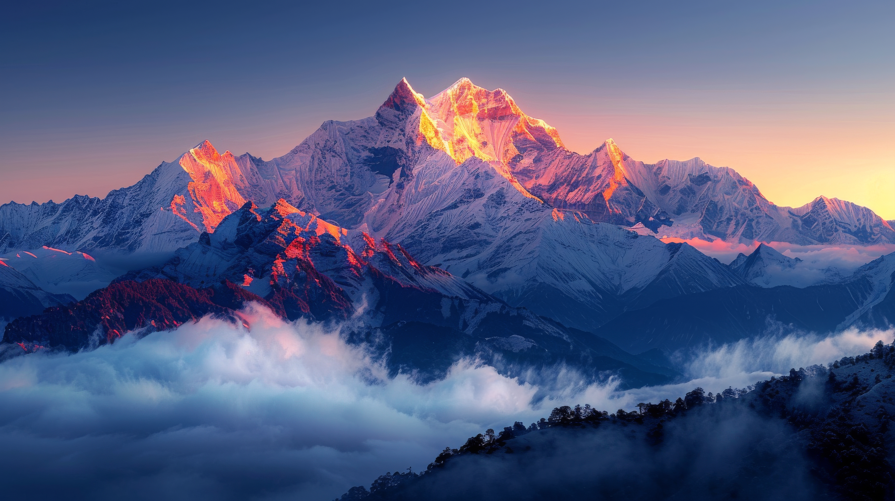
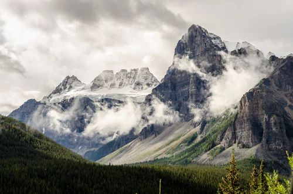

OUR TOP DESTINATIONS
Experience nature at its finest in the world's most stunning mountain destinations
|
 HIMALAYAS snowy peaks & enless horizon |
The Himalayas are a magnificent mountain range filled with breathtaking natural beauty. They are famous for their towering snow-covered peaks and peaceful valleys. The region is home to Mount Everest, the highest mountain in the world. Visitors can enjoy stunning views, fresh air, and beautiful landscapes. The Himalayas are also home to many unique plants and wild animals. Their rivers, glaciers, and forests make the region truly spectacular. The mountains attract travelers, trekkers, and adventure lovers from around the world. A journey through the Himalayas offers an unforgettable experience close to nature. |
|---|---|
 SWISS ALPS nature at its purest |
The Swiss Alps are a breathtaking mountain region known for their stunning natural beauty. They are famous for their snow-covered peaks and green valleys. The region offers spectacular views of mountains, lakes, and peaceful villages. Visitors can enjoy activities such as skiing, hiking, and sightseeing. The Swiss Alps are home to many beautiful landscapes and charming towns. Their fresh air and peaceful surroundings attract travelers from around the world. Every season brings a unique charm to the mountains. A journey through the Swiss Alps is an unforgettable experience. |
|
 ROCKY MOUNTAIN adventure at its peak |
The Rocky Mountains are a magnificent mountain range known for their breathtaking landscapes. They stretch across western North America with towering peaks and deep valleys. The region is famous for its beautiful lakes, forests, and glaciers. Visitors can enjoy hiking, camping, skiing, and wildlife watching. The mountains are home to animals such as bears, elk, and mountain goats. Their peaceful scenery attracts nature lovers and adventurers from around the world. Each season brings a unique beauty to the Rocky Mountains. Exploring the Rockies offers an unforgettable journey through nature. |